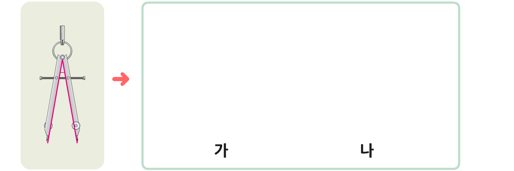

작은 각을 단위로 하여
여러 번 붙여 가면서
각의 크기를 비교할 수 있어!
3
일정한 각의 크기를 이용하여 컴퍼스의 두 각의 크기를 비교해 봅시다.

왼쪽 컴퍼스를 이용하여 나머지 두 컴퍼스가 벌어진 정도를 어떻게 비교할 수 있을까요?
왼쪽 컴퍼스가 이루는 각이 나머지 두 컴퍼스의 벌어진 정도에 몇 번이나 들어가는지 세어 봅니다.
두 컴퍼스가 벌어진 정도를 비교하여 이야기해 보세요.
왼쪽 컴퍼스가 이루는 각이 가에는 4번, 나에는 5번 들어가기 때문에 나 컴퍼스의 벌어진 정도가 더 큽니다.